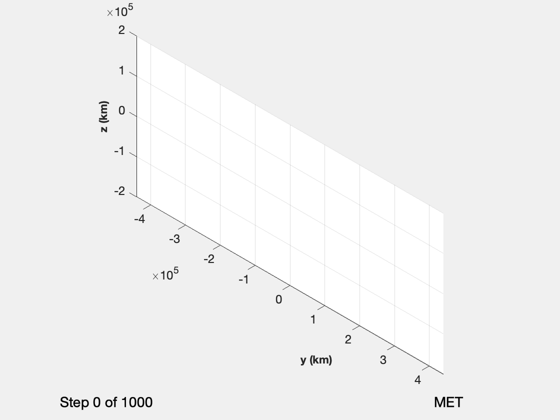
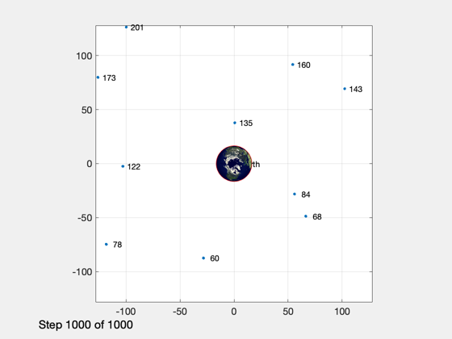
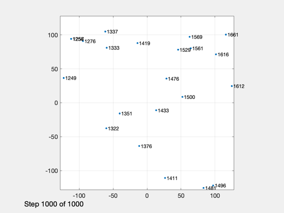
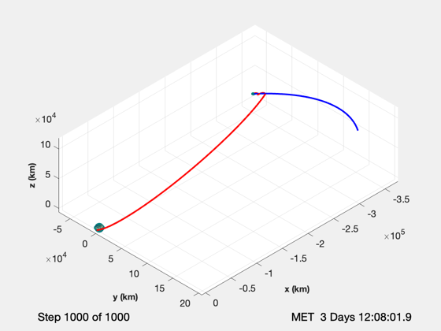
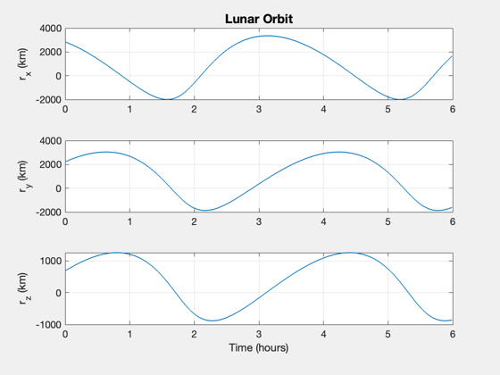
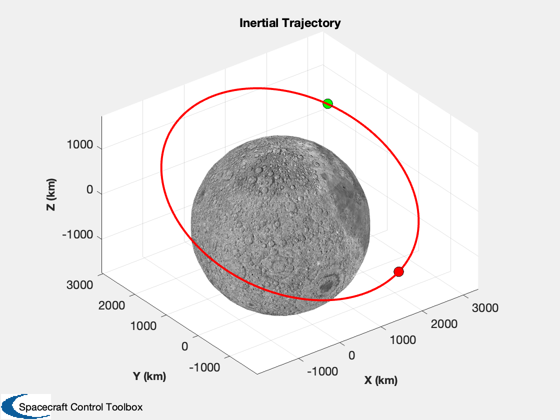

Generate a trajectory for optical navigation in the Earth-Moon system
The spacecraft is an elliptical Earth orbit that passes behind the moon.
The timing is set so that the spacecraft should be behind the moon in time for an orbit entry burn. At that point the simulation switches times scales and puts the spacecraft in a lunar orbit. You will notice that the moon fills the entire camera field of view at that point. You use the magnifying tool to look at the lunar orbit. This can be hard to do until the sim stops.
This simulation creates 1000 points. The time scale in the lunar transfer orbit is the orbit period divided by n. The lunar time scale is dTL seconds. This simulation is slow but you can save the position vectors for use in optical navigation studies.
The simulation is in the ECI frame. Saves a results file called EarthMoonTraj.
------------------------------------------------------------------------- See also: Constant, TwoObjectTrajectoryViewer, RPRA2AE, Period, Date2JD, MoonECIElements, RVOrbGen, NavigationCamera, StarCameraViewer, DispWithTitle, LunarOrbitInsertion, RV2El, Mag, Unit, U2Q, TimeLabl, Plot2D, PlotPlanetaryOrbit -------------------------------------------------------------------------
Contents
%-------------------------------------------------------------------------- % Copyright (c) 2020 Princeton Satellite Systems, Inc. % All rights reserved. %-------------------------------------------------------------------------- % Since version 2020.1 %--------------------------------------------------------------------------
Constants
muMoon = Constant('mu moon'); rMoon = Constant('equatorial radius moon'); n = 1000; % Total number of steps fOrb = 0.6; % Fraction of transfer orbit to simulate dateTLI = [2024 4 10 0 0 0]; % Date of the trans-lunar injection rPLT = 7000; % Perigee of the lunar transfer ellipse rALT = 430000; % Apogee of the lunar transfer ellipse rNE = 12000; % Range from moon to switch to Earth reference
Lunar spacecraft parameters
% Perigee altitude in lunar orbit hLPerigee = 100; % km % Spacecraft parameters thrust = 400; % N mass = 100; % kg uE = 310*9.806; % m/s for a typical bipropellant engine % This is the time step in lunar orbit dTL = 40;
Setup the trajectory viewer
w = 440000; s = struct('xlim',[-w w],'ylim',[-w,w],'zlim',[-200000 200000]); % These are for photorealistic Earth and Moon images d = load('EarthMR.mat'); gP = d.planet; d = load('Moon.mat'); gM = d.planet; % Initialize the trajectory viewer TwoObjectTrajectoryViewer( 'initialize', 'Earth-Moon', n, s, gP, gM )
Generate the trajectory of the spacecraft
[a,e] = RPRA2AE(rPLT,rALT); % Starts behind the Earth p = Period(a); % Transfer orbit period t = linspace(1,fOrb*p,n); % Time vector dT = t(2); % Keplerian propagation jD0 = Date2JD(dateTLI); jD = jD0 + t/86400; [elM,jDM] = MoonECIElements; tM = t + (jD0-jDM)*86400; [rM,vM] = RVOrbGen(elM,tM); [r,v] = RVOrbGen([a elM(2) elM(3) 0 e 0],t); % Navigation Camera data structure d = NavigationCamera; % Setup the two camera viewers hNav = StarCameraViewer('initialize','Navigation Camera',n); hStar = StarCameraViewer('initialize','Star Camera',n);

Compute the Lunar orbit insertion point
[rMin,kLI] = min(Mag(rM-r)); DispWithTitle(kLI,'Step for Lunar Orbit Insertion'); DispWithTitle(rMin,'Closest approach to the moon (km)'); % Compute moon relative velocity and position rLI = r(:,kLI) - rM(:,kLI); vLI = v(:,kLI) - vM(:,kLI); [dV,uB] = LunarOrbitInsertion( hLPerigee, rLI, vLI, mass, uE, thrust ); vLI = vLI + dV*uB; elLO = RV2El(rLI,vLI,muMoon); % Propagate the remaining steps to show lunar orbit tMO = (0:n-kLI)*dTL; [rL,vL] = RVOrbGen(elLO,tMO,[],muMoon); elM(6) = elM(6) + tM(kLI)*OrbRate(elM(1)); [rM2,vM2] = RVOrbGen(elM,tMO); j = 1; t = 0; tA = zeros(1,size(r,2));
Step for Lunar Orbit Insertion
461
Closest approach to the moon (km)
3671.9
Simulate
for k = 1:size(r,2) % Moon position d.xPlanet = rM(:,k); tA(k) = t; % This path is for lunar orbit if( k >= kLI ) r(:,k) = rM2(:,j) + rL(:,j); v(:,k) = vM2(:,j) + vL(:,j); rM(:,k) = rM2(:,j); j = j + 1; t = t + dTL; else t = t + dT; end % Navigation Camera rN = Mag(rM(:,k) - r(:,k)); % If too close to the moon, look at the Earth if( rN > rNE ) u = Unit(rM(:,k) - r(:,k)); else u = Unit(-r(:,k)); end d.xPlanet = [rM(:,k) [0;0;0]]; d.q = U2Q(u,[0;0;1]); yN = NavigationCamera( r(:,k), d ); % Star Camera u = Unit(Cross(r(:,k),v(:,k))); d.q = U2Q(u,[0;0;1]); yS = NavigationCamera( r(:,k), d ); % Display the cameras StarCameraViewer('update',yN,[],hNav, d,k); StarCameraViewer('update',yS,[],hStar,d,k); % Update the viewer TwoObjectTrajectoryViewer( 'update', r(:,1:k), rM(:,1:k), k, t ); end  
Plot the lunar orbit
[tP,tL] = TimeLabl(tMO);
Plot2D(tP,rL,tL,{'r_x (km)' 'r_y (km)' 'r_z (km)'},'Lunar Orbit');
PlotPlanetaryOrbit( rL, 'Moon');
t = tA;
save('EarthMoonTraj','r','v','rM','vM','t','tL','rL','vL','tMO')
%--------------------------------------
% $Date$
% $Id: 015b3b1a4389d0ad66c5331084d6817172931013 $
 